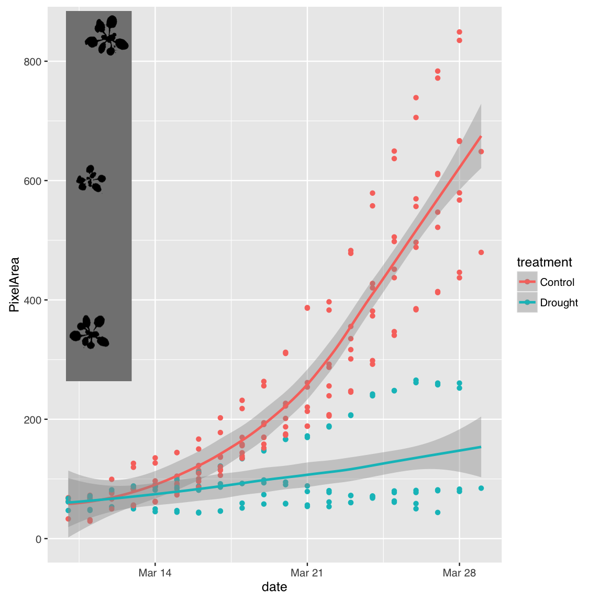
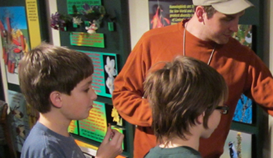
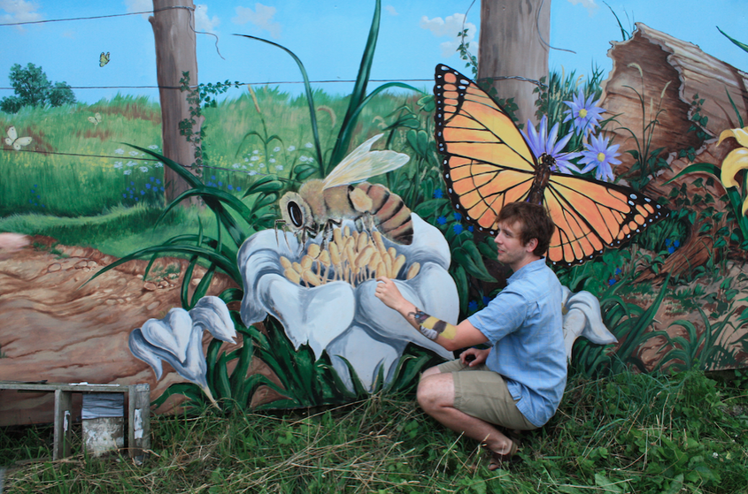

Outreach
Dr. Sharon B. Gray Memorial Foundation
“I feel that when the human race acquired the technology and evolved the intelligence necessary to build an industrial society, it also acquired the moral obligation to understand and monitor its impact on the rest of the world.” -Dr. Sharon B. Gray
Dr. Sharon Gray was a bright human being with a passion for science and mentoring women. This foundation has set up endowments for financially supporting women in science at UC Davis, University of Illinois Urbana-Champaign, American Society of Plant Biology, and the Ethiopian Agricultural Research Center (EIAR). To date, 39 scientists have received research or travel funding through the foundation. Read more about the projects here.
To donate directly to support mentoring women in science: UC Davis Sharon Gray Memorial Fund.
Plants iView High-Throughput Phenotyping, Raspberry Pi, Computer Vision
A new module for Plants iView emphasizing quantitative biology and experimental design for 7th graders. Students set up Raspberry Pi Camera rigs to take time-lapse photos of Arabidopsis plants growing in control or drought conditions. Learning the basics of computer vision and plotting students were able to interpret the plant growth data to see if their hypotheses were supported. It was great working with Jennifer Quebedeaux on this module.

Quantitative biology by 7th graders at Champaign, IL Unit 4 School District
Plants iView
I led a group of Illinois Plant Biology graduate students in creating middle school plant science curriculum to fit into an afterschool program at Urbana Middle School. As a group we wrote two successful grants to secure funding from the ASPB Educational Foundation Grant and the Illinois Public Engagement Grant for this project. This platform is still in use as a major outreach project for the Illinois Department of Plant Biology. All of the course materials, teacher discussion forum, and student blogs can be accessed through the Plants iView website. We made sure that the lessons met national and Illinois specific educational standards for grades 6-8. The graduate students then taught all the lessons for the program.

Teaching a lesson at the Pollinatarium
National Pollinator Week
For 2010 and 2011, I co-organized this community event with Dr. Michelle Duennes, A.K.A the Polly Nator! For the month leading up to National Pollinator Week Michelle and I worked a booth at the Urbana Farmers Market discussing the importance of pollinators for food production.

Showing off my bumble bee tattoo. Pollinator mural by Glen C. Davies.
At the end of National Pollinator Week we hosted all day events that included:
- Nature walks led by The Prairie Monk
- Insect photography workshop by Scientific American Blogger Alex Wild
- Honey Tastings
- Nurturing native bee workshop
- Native bee identification workshop
- Live concert by Duke of Uke and His Novelty Orchestra
Threatened Species Survey
Volunteered for field trip to find, identify, and catalog rare orchids and other plant species in Grampians National Park, Victoria, Australia.
UIUC International Impact
Fundraising and service project in Ecuador building a school for a small indigenous village North of the capital city, Quito
Camp Healing Heart
I was a counselor at a nature based overnight camp to help children who recently lost parents deal with grief in a natural setting. This camp was sponsored by a local hospice chapter that my family used for at home care of my dad’s battle with cancer.